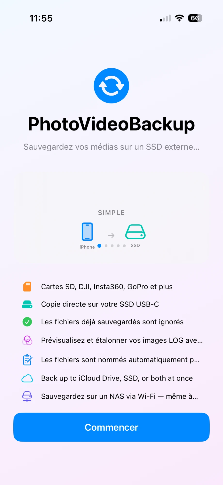
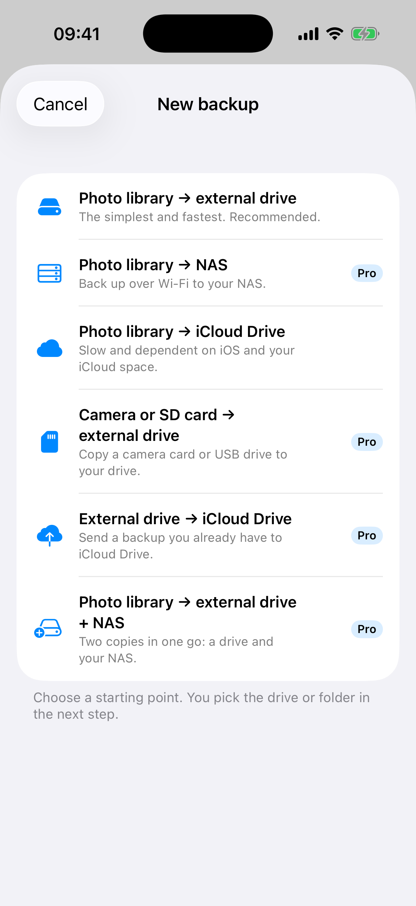
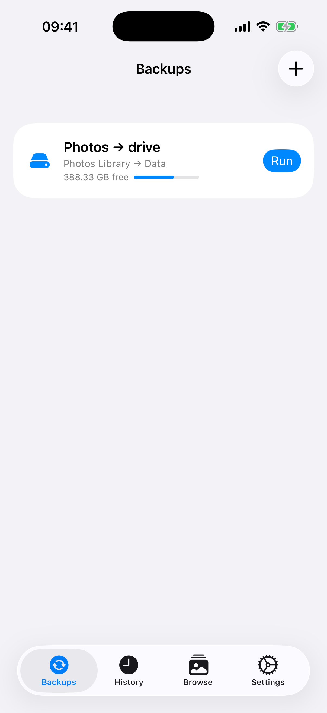
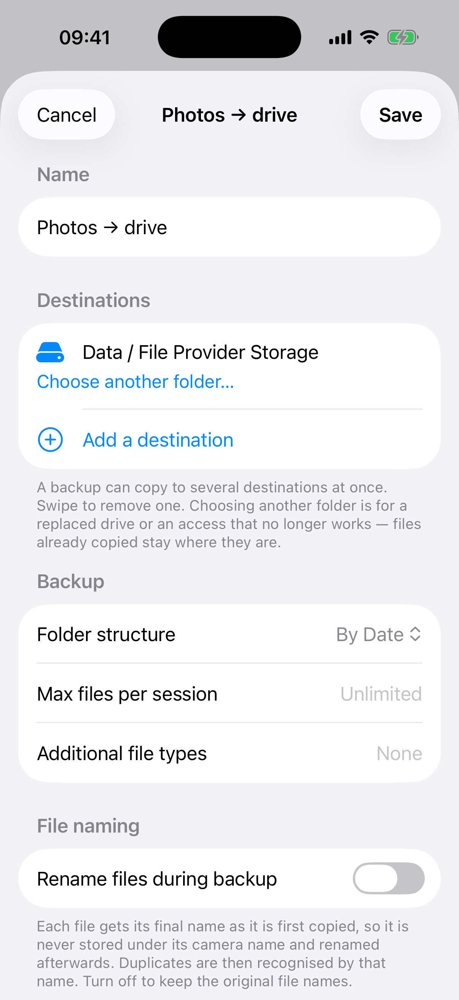
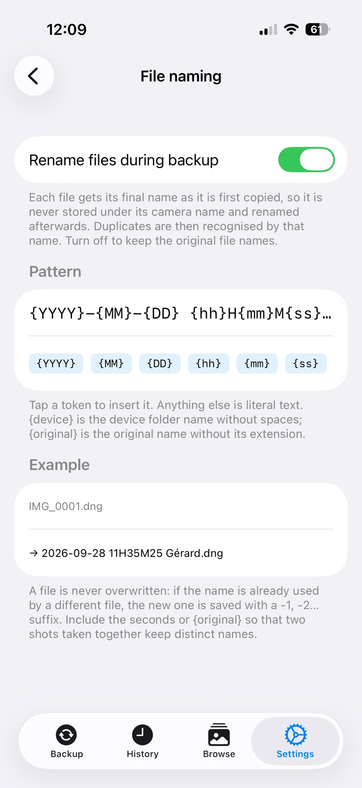
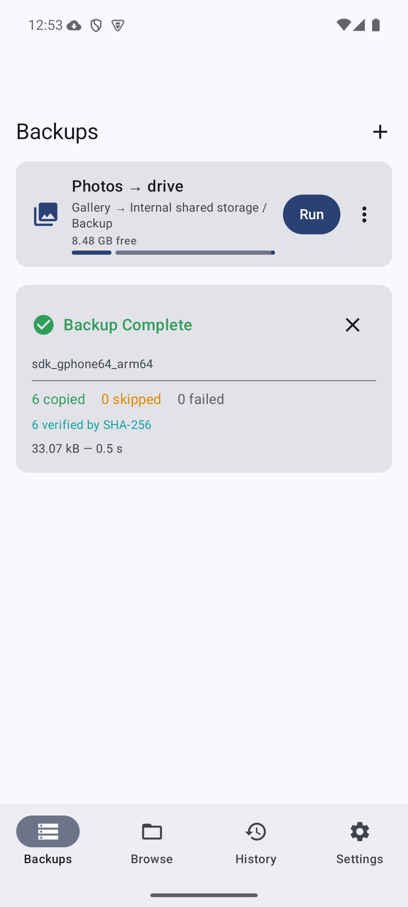

PhotoVideoBackup — 使用者指南
將照片和影片備份到外接 SSD、SD 卡或 NAS —— 在 iPhone 或 Android 手機上都能使用。
PhotoVideoBackup 2.7 指南 — iPhone（iOS 16 及以上）和 Android（9 及以上）
1 PhotoVideoBackup 是什麼？
PhotoVideoBackup 可將手機中的照片和影片 —— 或相機記憶卡中的檔案 —— 複製到便攜式 SSD、USB 儲存裝置或 NAS。您的檔案絕不會經過任何在線服務：App沒有伺服器，也沒有帳號。
- 手機儲存空間已滿，您想安全地騰出空間。
- 旅行歸來，SD 卡裡裝滿了素材（DJI、GoPro、Insta360、Blackmagic…），想立刻備份妥當。
- 您想要一份不依賴 iCloud 或 Google 相簿的個人副本。
為什麼可靠？每個複製的檔案都會被重新讀取，並用數學指紋（SHA-256）驗證。只要有一個位元組不對，App就會告訴您 —— 您絕不會在不知情的情況下留下損壞的備份。
App只做複製。除非您在備份後明確要求，否則它絕不會移動或刪除來源中的任何內容（見「歷史記錄與報告」）。
2 免費版與 Pro
PhotoVideoBackup 可免費下載。一次 Pro 購買 —— 只需付費一次，無需訂閱 —— 即可解鎖高級功能：
| 功能 | 免費 | Pro |
|---|---|---|
| 將照片圖庫備份到一個驅動器或資料夾 | ✓ | ✓ |
| 多個備份，每個都有自己的驅動器、NAS 和設定 | — | ✓ |
| 瀏覽和預覽備份（含 LUT 預覽） | ✓ | ✓ |
| 備份相機記憶卡和 USB 裝置（SD、DJI、GoPro、Insta360…） | — | ✓ |
| 鏡像到第二個驅動器 | — | ✓ |
| 透過 Wi-Fi 備份到 NAS | — | ✓ |
| 用 LUT 為 LOG 影片調色（匯出 H.265） | — | ✓ |


3 您需要準備什麼
| iPhone / iPad | Android | |
|---|---|---|
| 裝置 | 帶 USB-C 連接埠的 iPhone（iPhone 15 及以上），iOS 16 及以上 | Android 手機或平板，Android 9 及以上 |
| 驅動器 | 任何 USB-C SSD（Samsung T7、SanDisk Extreme、WD My Passport…） | 任何 USB-C SSD 或 USB 隨身碟，或手機上的一個資料夾 |
| 集線器或讀卡機（可選） | 一個小型 USB-C 集線器，可同時連線 SSD 和讀卡機 | USB-C 讀卡機，或 OTG 集線器 |
4 首次啓動與權限
歡迎介面會介紹App和五種典型連線方式 —— 從最簡單的手機 → SSD，到透過 VPN 存取的 NAS。點一下開始使用。

- iPhone / iPad：允許對照片圖庫的完全存取。沒有它，App無法讀取您的照片。
- Android：允許存取您的照片和影片。同時允許存取照片的位置資訊 —— 否則 Android 會從它提供的檔案中去掉 GPS 資料，備份就不是原件了。請允許通知，以便備份結束時收到提醒。
5 設定裝置名稱和目的地
- 開啟設定標籤頁。在裝置部分輸入一個資料夾名稱 —— 例如安娜的 iPhone或 Pixel 8。它會成為驅動器上的資料夾名，這樣兩部手機備份到同一個驅動器時互不混淆。設定名稱之前，備份不會開始。
- 連線您的驅動器。
- iPhone / iPad：開啟備份標籤頁，點一下新建備份（或 +），選擇照片圖庫 → 外接驅動器，再點一下選擇…，在系統檔案瀏覽器中選擇該驅動器或其中的資料夾。Android：在備份標籤頁中同樣操作——新建備份（或 +）、相簿 → 外接硬碟、選擇…——然後選取硬碟或其中的資料夾（也可以是手機自身儲存）。
- 硬碟名稱會顯示在該備份的卡片上，並顯示其剩餘空間。您只需操作一次：下次App會自動辨識該硬碟。


6 備份您的照片和影片
開啟備份標籤頁。每個備份是一張卡片，顯示其名稱、複製的來源和目的地，以及其硬碟的剩餘空間。點一下開始。使用 Pro 可建立多個備份——例如一個備份到硬碟、一個備份到 NAS——每個備份都有自己的設定：長按卡片（iPhone）或點一下其 ⋮ 選單（Android），然後選擇設定。


App先分析圖庫，然後開始複製。第一次備份耗時最長；之後只複製新增內容，快得多。
- 僅儲存在 iCloud / Google 相簿中的照片會先被下載 —— 需要網路連線和一些時間。
- App把每個檔案直接寫入目的地，因此即使手機幾乎已滿也能工作。
- 您可以離開App：備份結束時會收到通知。
7 備份相機記憶卡（Pro）
- 將讀卡機連線到手機並插入記憶卡（如果 SSD 也要保持連線，請使用集線器）。
- iPhone / iPad：在備份標籤頁點一下 +，選擇相機或 SD 卡 → 外接驅動器，然後點一下添加來源…，在檔案瀏覽器中選擇記憶卡。Android：在備份標籤頁中同樣操作：+、相機或 SD 卡 → 外接驅動器、添加來源…，然後在檔案瀏覽器中找到該卡並確認。
- 選擇目的地並為其命名——Blackmagic、日本之旅……裝置類型會自動辨識。
- 點一下開始。
| 辨識的裝置 | 備份的內容 |
|---|---|
| DJI Mini 3 Pro | 照片、影片、DNG 和遙測資料（.srt） |
| DJI 360 / Action（Neo 2…） | 影片、照片、DNG、音頻和遙測資料（.srt） |
| Insta360（X5…） | .insv、.insp 和 .lrv 檔案 |
| GoPro HERO | 影片和照片；略過代理檔案（.lrv）和縮圖檔案（.thm） |
| 其他裝置 | 常見的照片、影片和 RAW 格式 |
要移除來源，請刪除使用它的備份（如果沒有其他備份使用該卡，它也會被一並忘記）。不會刪除任何檔案。
8 備份進行時
點一下「備份」後，備份進行中面板會立即出現。先是正在準備…（連線目的地），然後是正在分析來源…，並即時顯示已找到的檔案數 —— 圖庫很大時可能要等一會兒，並沒有卡住。

| 階段 | App在做什麼 |
|---|---|
| 分析 | 統計檔案，並檢查哪些需要複製。 |
| 複製 | 將檔案寫入目的地。 |
| 驗證 | 重新讀取副本，並與原件比對。 |
| 已略過 | 該檔案已經備份過 —— 無需處理。 |
停止按鈕可隨時乾淨地結束備份。「設定 → 備份」中還有每次會話最大檔案數限制：留空表示不限制。
9 備份完成之後

| 數字 | 含義 |
|---|---|
| 已複製 | 首次儲存到目的地的檔案。 |
| 已略過 | 已經存在的檔案 —— 正常且安全。 |
| 失敗 | 無法複製的檔案（很少見）。 |
失敗可能源於記憶卡損壞、驅動器已滿、連線中斷，或某個檔案對於剩餘空間來說太大 —— 只會報告該檔案，其餘繼續。騰出空間或重新連線後再次執行備份：缺少的檔案會被補上。
10 歷史記錄與報告
歷史記錄標籤頁列出每一次備份：來源、目的地、資料夾結構、檔案數量，以及一種顏色 —— 綠色表示成功，橙色表示部分完成，紅色表示有失敗。

部分完成表示備份提前結束，報告會說明是四種原因之一：您點一下了停止、達到了檔案數限制、某個目的地斷開連線，或 iPhone 儲存空間不足（您的檔案是安全的 —— 請釋放空間）。重新連線驅動器或釋放空間後再次執行 —— 會從中斷處繼續。
點一下某個會話可查看報告：摘要、SHA-256 狀態，以及已複製、已略過和失敗檔案的列表 —— 並附有每個失敗的原因。有兩個目的地時，報告會分別顯示每個驅動器。

確認備份無誤後，刪除來源檔案…可以釋放記憶卡或圖庫的空間。它只提供已複製並已驗證的檔案，並且需要輸入四位數字驗證碼來確認。您的備份不受影響。對於照片，iPhone 和 Android 系統還會再要求一次確認。

11 瀏覽、查看和分享您的備份
瀏覽標籤頁可在App內查看驅動器上的內容：每個裝置一個資料夾，然後是按日期的資料夾，再是縮圖網格。點一下照片可全螢幕開啟 —— 滑動切換檔案，雙指捏合縮放 —— 或點一下影片播放。驅動器必須已連線。


要把檔案傳送到別處：點一下選擇，勾選檔案，然後點一下共用 —— AirDrop、訊息、電子郵件或其他App。

對於 NAS，「瀏覽」會列出檔案，只有在您開啟時才下載該檔案。
12 資料夾與檔名
在設定 → 備份中，資料夾結構決定裝置資料夾的組織方式：Flat（平鋪）、By month（按月）、By date（按日期，預設）或 By year / month（年 / 月）。「瀏覽」標籤頁會適應驅動器上已有的內容。
檔案命名在檔案首次複製時就給它最終的名稱 —— 它絕不會先以相機名稱儲存、事後再改名。開啟備份時重新命名檔案並編輯範本：點一下一個佔位符即可插入，其餘內容均為字面文字。示例一行會顯示結果。

| 佔位符 | 替換為 |
|---|---|
| {YYYY} {MM} {DD} | 拍攝的年、月、日 |
| {hh} {mm} {ss} | 拍攝的時、分、秒（本地時間） |
| {device} | 裝置資料夾名稱，不含空格 |
| {original} | 原始檔名，不含擴展名 |
- 絕不會覆蓋任何內容。如果名稱已被另一個檔案佔用，新檔案會加上
-1、-2… 後綴。請在範本中包含秒，讓同時拍攝的兩張照片保持不同的名稱。 - 重複檔案透過該名稱辨識。已備份的檔案會被略過 —— 即使您之後編輯過它 —— 而同名的不同檔案會被分開儲存。
- 已有檔案不會被重新命名。該設定只適用於從現在起複製的檔案。關閉設定時（預設），檔案保留相機名稱。
您還可以添加額外的檔案擴展名，與媒體檔案一起複製 —— 例如 gpx GPS 記錄。
13 LUT 調色：為 LOG 素材賦予風格（Pro）
以 LOG 拍攝的素材（DJI D-Log M、GoPro Protune…）在套用 LUT 之前看起來平淡發灰。在「瀏覽」中，為裝置資料夾分配 LUT，即可在App內預覽和調色。
- 開啟裝置資料夾，在 LUT 調色中點一下分配 LUT…，然後點一下匯入 LUT (.cube)…。任何標準
.cube檔案都可以（DaVinci Resolve、Final Cut Pro、相機廠商提供的）。 - 點一下該資料夾中的任意影片：播放時會即時套用 LUT。此預覽免費。
- 要生成永久副本（Pro），點一下選擇，選好影片，再點一下調色。每個影片會以內嵌 LUT 的方式重新編碼為 H.265，儲存到名為裝置 (Graded) 的同級資料夾中。


- 調色逐個影片進行，絕不是「全部」—— 一個資料夾常常混有 LOG 和普通片段，而 LOG LUT 會毀掉普通片段。
- 已調色的檔案會被略過，因此可以放心重新執行。可隨時取消：已完成的檔案會保留。
- 調色很耗資源：請保持App開啟、驅動器連線。手機可能會發熱。
- 對於 NAS，片段會先下載，在手機上調色，再上傳到 NAS 上的裝置 (Graded) 資料夾 —— 速度較慢，且會消耗流量。
14 同時備份到兩個目的地（Pro）
添加第二個目的地——長按該備份的卡片（iPhone）或點一下其 ⋮ 選單（Android），然後選擇設定和添加目的地。每個檔案會同時複製到兩處——兩個硬碟，或一個硬碟加一個 NAS。備份時間不會翻倍。如果某個目的地失敗或消失，另一個會繼續，報告會說明哪一個缺少什麼。
15 透過 Wi-Fi 備份到 NAS（Pro）
除了驅動器，或代替驅動器，您還可以透過網路直接備份到 NAS（Synology、QNAP、TrueNAS，以及任何支援 SMB 的裝置）。無需線纜，無需雲端，每個檔案都經過 SHA-256 驗證。
- 在 NAS 上啓用 SMB 檔案共用，並為某個使用者授予共用資料夾的讀寫權限。
- 在App中：使用照片圖庫 → NAS範本建立備份（Android 上為相簿 → NAS），或在現有備份的設定中添加 NAS。
- 填寫主機（如
192.168.1.20）、共用名稱（如photo）、可選的資料夾，以及您的使用者名和密碼。密碼儲存在 iOS 鑰匙串或 Android Keystore 中。 - 點一下測試連線：「已連線——找到 N 個項目。」 然後點一下建立（或在備份的設定中點一下儲存）。
NAS 現在會顯示在該備份的卡片上，並顯示其剩餘空間。每個備份都有自己的 NAS，因此可以使用多個。只要 NAS 可存取，您還可以在外出時備份——最簡單安全的方式是使用 Tailscale 這類 VPN：在 NAS 和手機上安裝它，然後將 NAS 的 100.x.x.x 地址作為主機。
16 Android 與 iPhone 的區別
兩個App使用同一套引擎：相同的重複檢測、相同的命名、相同的 SHA-256 驗證、相同的索引 —— 在其中一個上開始的備份，會被另一個辨識。
| iPhone / iPad | Android | |
|---|---|---|
| 圖庫來源 | 照片圖庫 | 圖庫（照片和影片） |
| 目的地 | 在「檔案」中選擇的資料夾（SSD、iCloud Drive、SMB） | 用系統選擇器選擇的資料夾（SSD、USB、手機儲存），NAS |
| 背景 | 約 30 秒，之後備份期間螢幕保持常亮 | 前景通知使其持續執行，並帶有停止按鈕 |
| Pro | App 內購買（App Store） | 一次性購買（Google Play） |
| Mac | 可在 Apple 芯片 Mac 上執行（「為 iPad 設計」） | — |
.nomedia 檔案），以免備份被再次備份。

17 常見問題
再次執行時會重複複製同一個檔案嗎？不會。每個檔案在目的地都有一個名稱，下次備份會按該名稱查找。如果App的記錄顯示它來自同一個原件，就會略過 —— 即使您之後編輯過。只有真正不同、卻同名的檔案才會加上 -1、-2… 後綴，而且絕不會覆蓋任何內容。
App把已備份的記錄儲存在哪裡？儲存在它自己的資料庫中，以及每個目的地根目錄下的一個小型隱藏檔案 .pvb-index.json 中。這份副本會隨備份一起轉移：重新安裝後，或換一部手機，App讀取它就不會重複複製。您可以不管它；如果刪除，App會重新建立。
可以同時備份到 NAS 和驅動器嗎？可以 —— 每個已連線的目的地會同時收到備份。
連線 NAS 超時。通常是 NAS 無法存取：請檢查是否在同一 Wi-Fi 下（或 VPN 已開啓）、是否啓用了 SMB 共用，以及 NAS 防火牆是否允許該連線。
可以讓兩部手機使用同一個驅動器嗎？可以。在「設定」中為每部手機設定不同的資料夾名稱；各自會在驅動器上建立自己的資料夾。
進度條停在 3% 似乎卡住了。最先處理的檔案通常是大影片。請等幾分鐘。
我的記憶卡顯示為「Documents」。有些相機使用通用資料夾。添加來源時請輸入一個有意義的名稱。
手機幾乎滿了還能備份嗎？可以。檔案以流的方式直接寫入目的地，每次只佔用幾 MB。只有單獨備份到 NAS 時，才需要每次容納一個檔案的空間。確實放不下的檔案會被報告為失敗，其餘繼續。
我的資料會被傳送到什麼地方嗎？不會。一切都發生在您的手機與驅動器或 NAS 之間。App沒有伺服器，也沒有帳號。唯一的網路流量是發往您自己設定的 NAS，以及系統下載您自己的 iCloud / Google 照片。
支援哪些語言？英語、法語、德語、西班牙語（通用，面向西班牙和拉丁美洲）、義大利語、葡萄牙語（歐洲）、簡體中文、繁體中文、俄語、日語、韓語、印地語和阿拉伯語。App預設跟隨手機語言；您可以在設定 → 語言中強制指定一種，無需重啓。